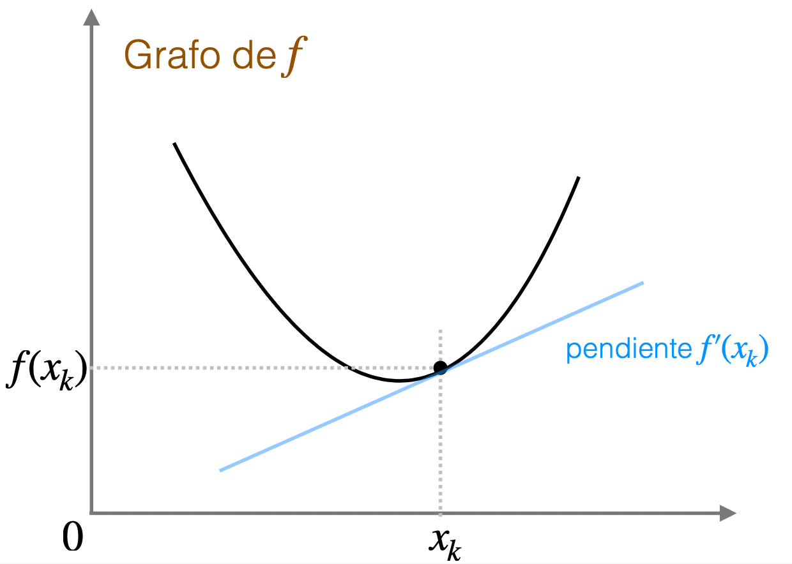
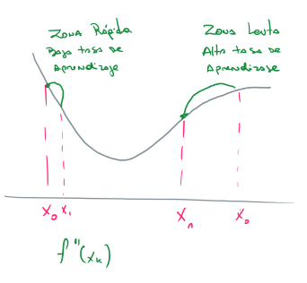
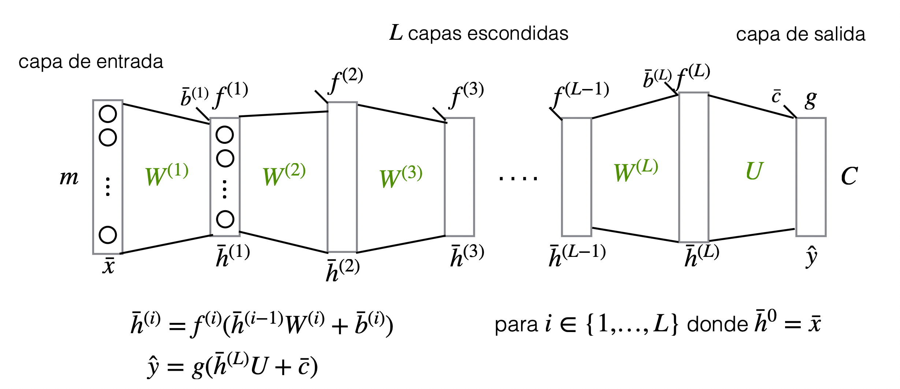

4 Métodos Iterativos
Newton y Descenso por el Gradiente
4.1 Minimizando una Función
Hasta el momento, para minimizar hemos aprovechado convexidad, y encontrado una forma explícita o cerrada de la solución
Cuadrados mínimos y regresión lineal, es uno de los pocos casos en donde uno puede hacer esto. En general no es posible…
En el caso que no podemos encontrar una solución explicita o ni siquiera tenemos convexidad, una técnica clásica es utilizar métodos iterativos
Los métodos iterativos pueden ser útiles también cuando tenemos una solución explícita (cuadrados mínimos/regresión lineal), ya que calcular esta solución puede ser muy caro (por ejemplo invertir una matriz muy grande). Los métodos iterativos ofrecen una solución aproximada de manera más rápida
4.2 Métodos Iterativos
Supongamos que queremos minimizar la función f : \mathbb{R}^n → \mathbb{R}
Idea de métodos iterativos:
- Comenzamos en un vector x_0 \in R^n
- En cada iteración actualizamos el vector, según cierta regla (la idea es que el nuevo vector tenga un menor valor de f)
- Nos detenemos según un criterio de parada
- Número máximo de iteraciones
- La mejora en f es menor que cierta tolerancia
Veremos primero dos métodos:
- Descenso por el gradiente (primer orden)
- Método de Newton (segundo orden)
4.3 Descenso por el gradiente
Supongamos que queremos minimizar la función f : \mathbb{R}^n → \mathbb{R}
Recordar que la dirección contraria al gradiente, es decir, −\nabla f, es la dirección de máximo descenso (\|\nabla f\| es la magnitud del máximo descenso)
Descenso por el gradiente:
- Comenzamos en un vector \bar{x}_0 \in R^n
- En cada iteración, actualizamos el vector según la regla:
\bar{x}_{k+1}\leftarrow \bar{x}_k- \eta \nabla f(\bar{x}_k)
Donde \eta es la tasa de aprendizaje
- Nos detenemos según el criterio de parada.
4.4 Método de Newton
4.4.1 Encontrar Raíces de funciones: una variable
El método de Newton es un método iterativo para encontrar raíces de funciones (puntos donde la función es 0)
Idea para encontrar raíces de f : \mathbb{R} → \mathbb{R} (caso una variable):
- En cada iteración tendremos un punto x_k \in \mathbb{R} donde f(x_k) \neq 0
- Nos gustaría movernos a un punto x_k + h tal que f(x_k + h) = 0
- Podemos usar una aproximación lineal para f(x_k + h) = 0
- La mejor aproximación lineal entorno a x_k está dada por la derivada:
f(x_k + h) \approx f'(x_k)h + f(x_k)

- Resolvemos en vez la ecuación:
f'(x_k)h + f(x_k) = 0 \qquad\Rightarrow \qquad h=\frac{f(x_k)}{f'(x_k)}
Luego nos movemos al punto x_k- \frac{f(x_k)}{f'(x_k)}
- Comenzamos con un x_0 \in \mathbb{R}
- En cada iteración, actualizamos el punto según la regla:
x_{k+1}\leftarrow x_k- \frac{f(x_k)}{f'(x_k)} - Nos detenemos según un criterio de parada
4.4.2 Minimizar una función: una variable
Supongamos ahora que queremos minimizar una función f : \mathbb{R} → \mathbb{R} en una variable.
Podemos usar Newton para encontrar una raíz de la derivada f′
Para minimizar f : \mathbb{R} → \mathbb{R} (caso una variable):
- Comenzamos con un x_0 \in \mathbb{R}
- En cada iteración, actualizamos el punto según la regla:
x_{k+1}\leftarrow x_k- \frac{f'(x_k)}{f''(x_k)}
- Nos detenemos según un criterio de parada

4.4.3 Minimizar una función: varias variable
Para minimizar una función f : \mathbb{R}^n \rightarrow \mathbb{R} (caso varias variables):
- Comenzamos con un vector x ̄0 ∈ R
- En cada iteración, actualizamos el vector según la regla:
x_{k+1} \leftarrow x_k−H_f(x_k)^{−1} \nabla f(x_k)
- Nos detenemos según un criterio de parada
Observaciones: Necesitamos que la inversa del Hessiano exista
4.5 Método de Newton vs Descenso por el gradiente
Método de Newton:
- En principio, no necesitamos ningún parámetro extra (por ej: tasa de aprendizaje)
- En general mejor convergencia ya que utiliza la segunda derivada
- Necesita más supuestos: el Hessiano debe existir y ser invertible
- Puede ser más costoso computacionalmente ya que hay que calcular H_f^{−1}
Descenso por el gradiente:
- Necesitamos escoger la tasa de aprendizaje
- Más simple: sólo usamos la primera derivada
- Puede ser más eficiente computacionalmente para datos grandes (muchas variables)
4.6 Aplicaciones en Machine Learning
Algunos problemas que se pueden resuelven con métodos iterativos, y en particular, con Descenso del Gradiente:
- Regresión Lineal
- Regresión Logística (simple o multinomial)
- Perceptrón
- Redes Neuronales Feed-Forward (o Perceptron Multicapa)
- …
4.6.1 Regresión Lineal
Datos {(\bar{x}_i, y_i)_{i=n}^n} donde cada x_i pertenece a \mathbb{R}^m e y_i \in \mathbb{R}. y_i indica la respuesta correcta de \bar{x}_i
Para un dato nuevo \bar{x} \in \mathbb{R}^m queremos predecir su valor de y
Regresión Lineal:
Aprendemos la función de la forma:
\hat{y} = c_0 + c_1x_1 + \cdots + c_m x_m Buscamos parámetros \bar{c} que minimicen:
Loss(\bar{c})=\frac{1}{n}\sum_{i=1}^{n} (y_i-\hat{y}_i)^2
Ejercicio: ¿Cómo se ve la regla de actualización de Descenso por el Gradiente?
Caso univariado
Loss(\bar{c})= \frac{1}{2}(y-\hat{y})^2=(y-c_0-c_1x_1+\cdots+c_mx_m)^2
c_k\leftarrow c_k+n2(y-\hat{y})\cdot x_k
Caso multivariado
c_k\leftarrow c_k+y\frac{2}{n}\sum_{i=1}^{n} (y_i-\hat{y}_i)\cdot x_{ik}
4.6.2 Regresión Logística
Utilizado para clasificación binaria (versión simple) o múltiple (versión multinomial)
Clasificación binaria:
Datos {(\bar{x}_i, y_i)_{i=n}^n} donde cada x_i pertenece a \mathbb{R}^m e y_i \in {0,1}. y_i indica la respuesta correcta de \bar{x}_i
Para un dato nuevo \bar{x} \in \mathbb{R}^m queremos predecir su clase, en este caso, la probabilidad de que y= 1
Regresión Logísticas Simple
Aprendemos una función de la forma:
\hat{y} = sigmoid(u)\frac{1}{1+e^{-u}}
u = c_0 + c_1x_1 + \cdots + c_m x_m
Regresión Logística simple: función de error
¿Qué función de error minimizamos en este caso?
- ¿Error cuadrático?
Minimizamos\; \frac{1}{n} \sum_{i=1}^n (y_i-\hat{y}_i)^2
Esta función no es convexa Esta función si es convexa
- Ejercicio:
-
Demuestre que la regla de actualización para Descenso por el Gradiente se ve igual que la de Regresión Lineal
Regresión Logística multinomial
Clasificación múltiple (más de dos clases):
Datos {(\bar{x}_i, y_i)_{i=n}^n} donde cada x_i pertenece a \mathbb{R}^m e y_i \in \mathbb{R}^c. y_i indica la clase correcta de \bar{x}_i (es decir, \bar{y}_i le asigna probabilidad de 1 al clase correcta)
Para un dato nuevo \bar{x} \in \mathbb{R}^m queremos predecir una distribución de clases de probabilidad sobra las C clases.
Aprendemos una función de la forma (softmax):
\hat{y} = softmax(u_1,\dots,u_C) = \left(\frac{e^{u_1}}{\sum_{k=1}^{C} e^{u_k}}, \dots, \frac{e^{u_C}}{\sum_{k=1}^{C} e^{u_k}}\right)
u_k = c_{k0} + c_{k1}x_1 + \dots + c_{km}x_m
Utilizamos la entropía cruzada como error (para cada dato (\bar{x}_i, \bar{y}_i)):
-\sum_{k=1}^C =\bar{y}_{ik}\;log(\hat{y}_{ik})
4.7 Perceptrón
u = x_1w_1 + x_2w_2 + \dots + x_mw_m + b \hat{y} = f(u)
- Si f = sigmoid tenemos el modelo de regresión logística simple
- Si f = id tenemos el modelo de regresión lineal
4.7.1 Funciones de Activación
4.8 Red Neuronal
4.8.1 Red Neuronal caso simple
Notación matricial/vectorial:
- \bar{h} = f(\bar{x}W + b) (f se aplica coordenada a coordenada)
- \hat{y} = g ( \bar{h} \bar{u}+c)
4.8.2 Red Neuronal Feed-Forward
Feedforward fully connected networks o Multilayer Perceptron (MLP):
- Parámetros de la red: W^{(1)},\bar{b}^{(1)},...,W^{(L)},\bar{b}^{(L)},U,\bar{c}
- Hiperparámetros: cantidad de capas L, tamaño entrada y salida, tamaño capas, funciones de activación, función de salida.
4.8.3 Red neuronal: caso clasificación

- C es la cantidad de clases en donde estamos clasificando
- \hat{y} es una distribución de probabilidad sobre las clases
- Comúnmente la función de salida g es en C variables y se define como (softmax):
g(a_1, \dots, a_C)= softmax(a_1,\dots,a_C) = \left(\frac{e^{a_1}}{\sum_{k=1}^{C} e^{a_k}}, \dots, \frac{e^{a_C}}{\sum_{k=1}^{C} e^{a_k}}\right)
Caso dos clases
- Si tenemos sólo 2 clases, podemos tener una sola salida (es decir, C = 1) y utilizar
g(a) = sigmoid(a) - En cualquiera de los dos casos (2 clases o más) usamos como error la entropía cruzada
Caso una sola neurona de salida
- Tenemos una sola neurona de salida con función de activación id (i.e. sin función)
- Usamos el error cuadrático
4.9 Gradiente y Entrenamiento de una red
Es común usar Descenso por el Gradiente (y sus variantes) para encontrar los parámetros \bar{\Theta} = (W^{(1)}, \bar{b}^{(1)}, \dots, W^{(L)},\bar{b}^{(L)}, U, \bar{c}) de la red
Regla de actualización: \bar{\theta} \leftarrow \bar{\theta}-\eta \nabla loss(\bar{\theta})
Podemos mirar esta regla coordenada a coordenada:
- Para cada parámetro \theta actualizamos \theta \leftarrow \theta-\eta\frac{\partial loss}{\partial\theta}(\bar{\Theta})
¿ Cómo calculamos \frac{\partial loss}{\partial\theta}(\bar{\Theta}) para el parámetro \theta?
Recordar que loss(\bar{\Theta)}= \frac{1}{N}\sum_{k = 1}^{N} error(\hat{y}^{(k)}, \bar{y}^{(k)})
N es el tamaño del conjunto de entrenamiento.
\Rightarrow \; \frac{\partial loss}{\partial\theta}(\bar{\Theta})= \frac{1}{N}\sum_{k = 1}^{N} \frac{error(\hat{y}^{(k)}, \bar{y}^{(k)})}{\partial\theta}(\bar{\Theta})
Nos podemos enfocar en calcular \frac{error(\hat{y}^{(k)}, \bar{y}^{(k)})}{\partial\theta}(\bar{\Theta}) para un dato genérico (\bar{x}, \bar{y})
Tenemos un dato fijo (\bar{x}, \bar{y}) y un punto \bar{\Theta} \in \mathbb{R}^d. Queremos calcular \frac{error(\hat{y}^{(k)}, \bar{y}^{(k)})}{\partial\theta}(\bar{\Theta}) para todos los parámetros \theta
Podemos usar Backpropagation
- Idea backpropagation:
-
Regla de la cadena + programación dinámica
4.10 Regla de la cadena